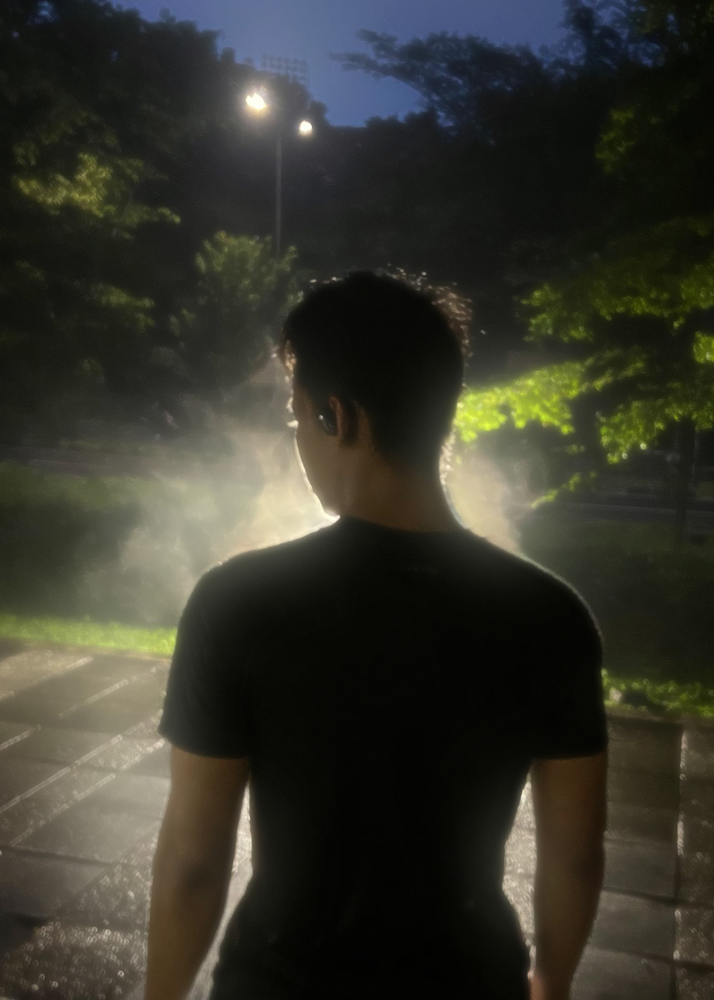
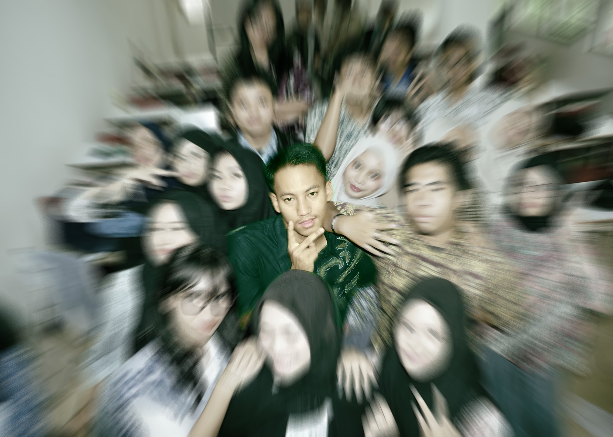

Namaku Muhamad Bagus Somomiharjo tapi orang-orang memanggilku Bagus. Aku sangat senang kalian bisa mampir ke websiteku yang sederhana ini. Aku memiliki hobi bermain game, mendengarkan musik, dan menonton film. Aku juga sangat menyukai dunia teknologi dan selalu ingin belajar hal-hal baru di bidang ini.
Aku tidak terlalu pilih-pilih makanan, asal enak dan bergizi. Aku menyukai masakan Indonesia seperti nasi goreng, sate, dan rendang, juga yang manis seperti kue, cokelat, dan es krim. Kalau harus memilih satu, jawabanku mie ayam karena enak dan bisa dimakan kapan saja.


Aku lulusan SMA dan suka sekali mengikuti kegiatan ekstrakurikuler: pramuka, paskibra, pencak silat, dan masih banyak lagi. Momen paling berkesan adalah saat mengikuti POPDA pencak silat dan meraih juara 2.